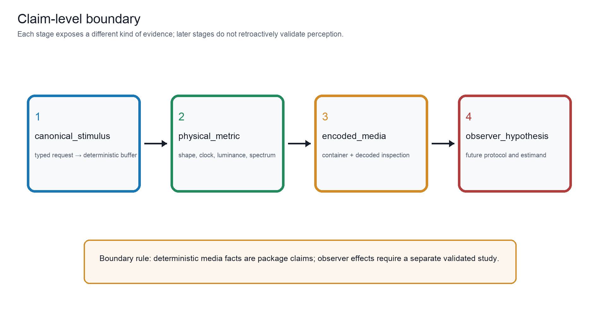
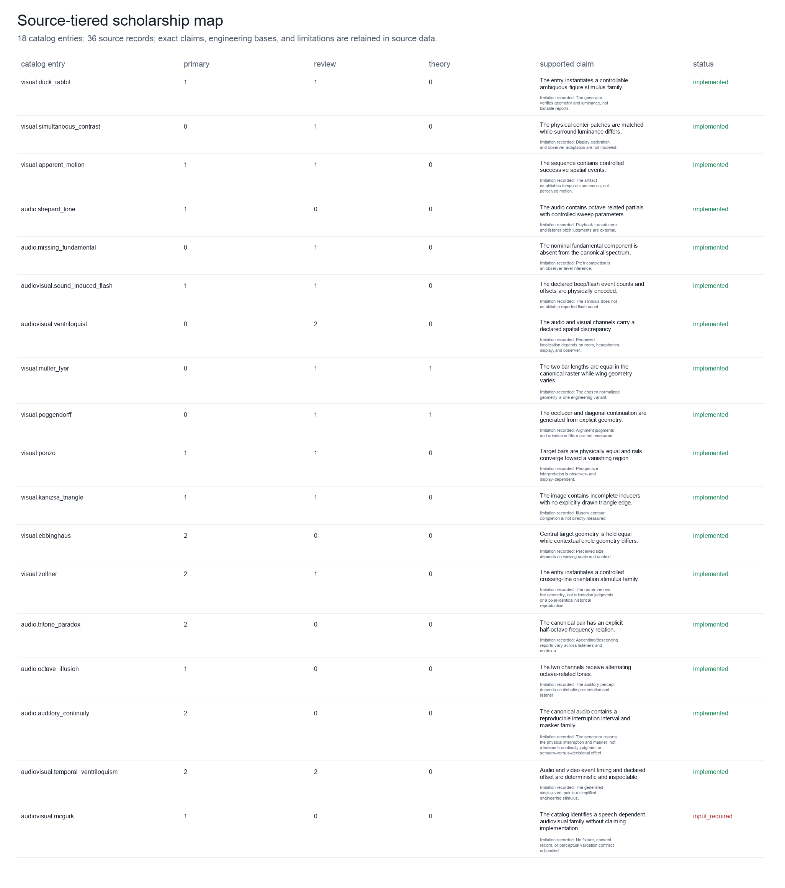
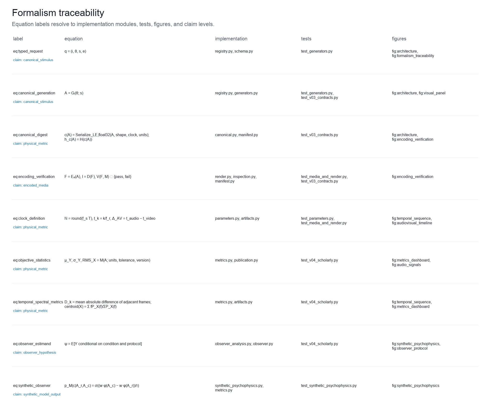
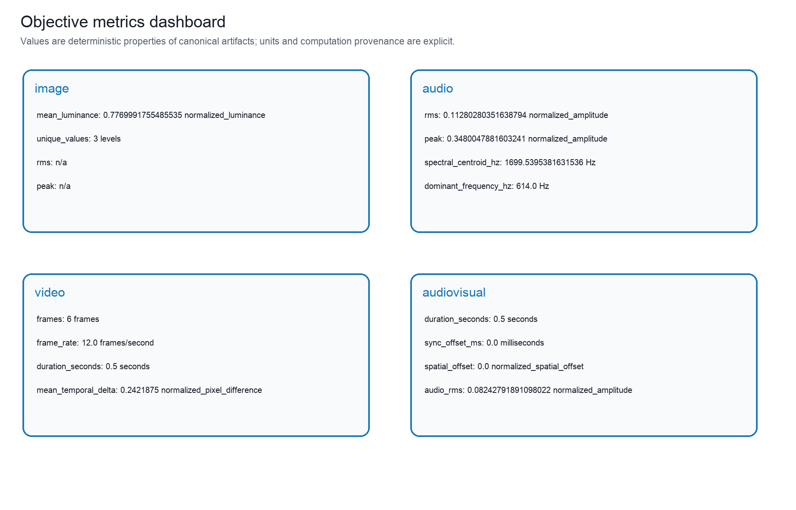
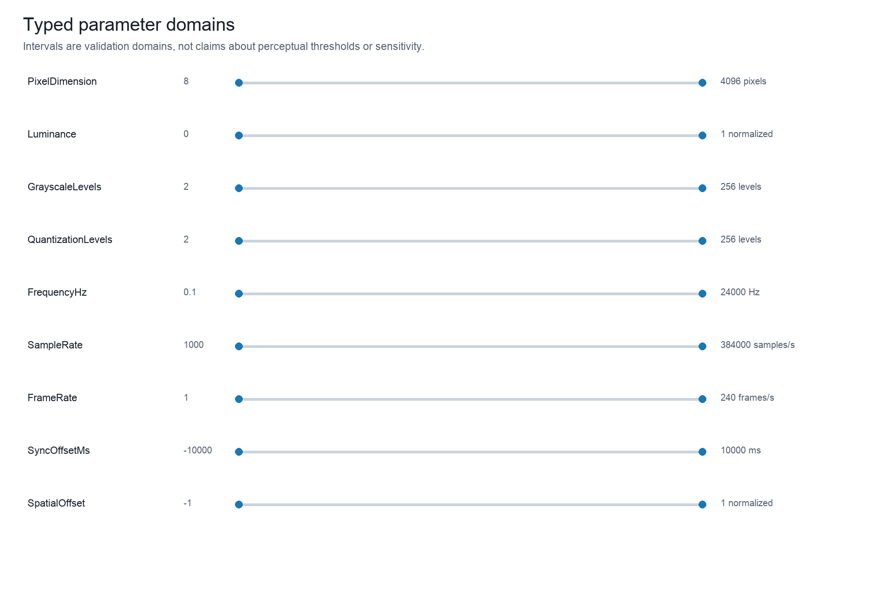
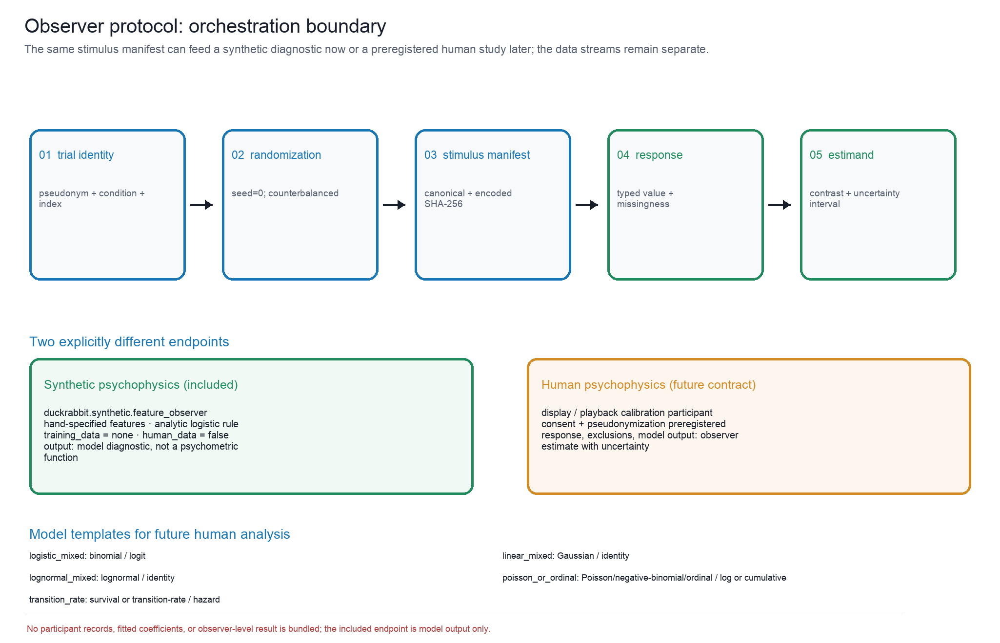

Publication Atlas, Caption Contract, and Scholarship Audit
The publication layer is generated from the same typed package state as the stimuli. It contains 15 scientific figures, 10 machine-readable tables, and a separately provenance-recorded editorial cover. The cover is an illustration of the project’s subject and methods aesthetic; it is not a stimulus, a participant result, or evidence of a perceptual effect.
Claim-level visualization

What this figure shows: Four numbered boxes separate canonical stimulus, physical metric, encoded media, and observer hypothesis, with a boundary rule stating that observer effects require a separate study. The four-stage boundary distinguishes what DuckRabbit can establish directly—canonical stimulus identity, physical/media metrics, and decoded encoded-media facts—from a future observer hypothesis. Source data output/data/claim_boundary.json records the stage definitions and boundary rule; the arrows describe increasing evidential requirements, not an inference that one stage establishes the next. Controls: claim levels in the taxonomy and manifest; seed not applicable to the explanatory diagram. Objective facts: no unit-bearing objective quantity is applicable; stage definitions and evidence boundaries are preserved in the sidecar. Claim level: source_supported. Source data: output/data/claim_boundary.json (SHA-256 digest recorded in the figure registry). Evidence lineage: formalism:eq:observer_estimand, formalism:eq:canonical_digest. Limitations: The diagram is a documentation contract and does not replace a preregistered observer study or empirical data. Boundary: A deterministic artifact can support a future hypothesis but cannot supply the observer data required to test it.
The claim boundary in [fig:claim_boundary] is a typed epistemic interface. A canonical digest identifies a deterministic buffer; objective metrics identify properties of that buffer; encoded-media verification identifies facts of the delivered file. A future observer hypothesis is a different object with its own protocol, estimand, and uncertainty interval.
Scholarship map and lineage

What this figure shows: Rows map catalog entries to source tiers, exact supported claims, engineering bases, limitations, and implementation status. The map links every catalog entry to its primary, review, and theory records, then preserves the exact source-supported claim, engineering departure, limitation, and implementation status. Source data output/data/scholarship_map.json are generated from the checked-in evidence matrix; a source record supports only the statement written in that record and does not certify pixel- or task-identical replication. Controls: checked-in evidence matrix; source roles and entry statuses; audit date recorded in data/evidence_matrix.json. Objective facts: one evidence row per catalog entry (18 entries); source-tier counts, exact claim text, engineering basis, limitation, and gap status. Claim level: source_supported. Source data: output/data/scholarship_map.json (SHA-256 digest recorded in the figure registry). Evidence lineage: gregory1997visual, brugger1999duckrabbit, yildiz2022ponzo, hirst2020sound, bruns2019ventriloquist. Limitations: The offline snapshot validates citation and lineage structure; live resolver status is a separate audit, and classifications can remain contested. Boundary: Scholarship coverage bounds the package’s evidence record and does not establish that any generated stimulus produces a universal percept.
The source map [fig:scholarship_map] and [tbl:evidence_audit] make five distinctions explicit: a primary demonstration, a review, a theoretical account, DuckRabbit’s engineering basis, and an evidence limitation. Brugger’s duck/rabbit study documents variation across figure variants and observers; this supports a careful ambiguity-family record, not a universal bistability claim [brugger1999duckrabbit]. Yildiz et al. review competing explanations of Ponzo-like illusions, so the catalog retains both a geometric construction and an unresolved theoretical boundary [yildiz2022ponzo]. Repp’s tritone analysis likewise motivates listener- and context-sensitive limitations [repp1997tritone].
The audit also treats software and its metadata as part of the
scholarly record. FAIR guidance emphasizes machine-actionable provenance
and reuse, and software-citation principles emphasize crediting an
identifiable version rather than citing an undifferentiated project name
[wilkinson2016fair; smith2016software]. Accordingly, the release
includes CITATION.cff, CodeMeta, Zenodo metadata, versioned
manifests, source-data sidecars, and resolver-linked bibliography
entries. These improve discoverability and attribution; they do not
increase the evidential level of any perceptual claim.
The intended public software identity is explicit: DuckRabbit will be released at the DuckRabbit public GitHub repository under the authorship of Daniel Ari Friedman, Active Inference Institute. The repository URL identifies the future citable software object; it is not a claim that the private sidecar has already been publicly mirrored.
Formal traceability and objective metrics

What this figure shows: Rows connect equation labels to their mathematical definition, implementation paths, tests, figure labels, and claim levels. The traceability registry connects the nine numbered equations to symbols, implementation modules, tests, and registered figures. Source data output/data/formalism_traceability.json is the machine-readable crosswalk used by the manuscript; it demonstrates contract coverage and test linkage without converting formal notation into empirical evidence. Controls: formalism registry version; seed not applicable to the traceability diagram. Objective facts: nine equation records with implementation, test, figure, and claim-level fields; no unit-bearing measurement is plotted. Claim level: physical_metric. Source data: output/data/formalism_traceability.json (SHA-256 digest recorded in the figure registry). Evidence lineage: formalism:eq:canonical_digest, formalism:eq:clock_definition, formalism:eq:objective_statistics. Limitations: Traceability records documentation and verification scope; it does not establish the truth of an observer-level theory. Boundary: A linked equation and test can show an implemented contract, not a validated perceptual law.
The formalism registry [fig:formalism_traceability] links equations [eq:typed_request; eq:canonical_generation; eq:canonical_digest; eq:encoding_verification; eq:clock_definition; eq:objective_statistics; eq:temporal_spectral_metrics; eq:observer_estimand; eq:synthetic_observer] to implementation modules, tests, and figures. The contract is intentionally auditable: equation labels point to code-owned records, while empirical claims remain outside the generator’s authority.

What this figure shows: Four artifact cards list image, audio, video, and audiovisual metrics with units, computation provenance, and claim level. The dashboard presents representative measurements from image, audio, video, and audiovisual canonical artifacts. Source data output/data/metrics_dashboard.json retains metric name, value, unit, computation version, tolerance, claim level, and canonical digest; luminance is normalized, amplitude is normalized, spectra are in hertz, frame differences are normalized pixel differences, and synchronization is in milliseconds. Controls: default canonical artifacts; metric computation version and tolerance recorded in the source-data sidecar; seed s=0. Objective facts: finite objective values with units: normalized luminance/amplitude, Hz, normalized pixel difference, ms, counts, and durations. Claim level: physical_metric. Source data: output/data/metrics_dashboard.json (SHA-256 digest recorded in the figure registry). Evidence lineage: formalism:eq:objective_statistics, formalism:eq:temporal_spectral_metrics. Limitations: Metrics are media properties and do not encode pitch, size, motion, localization, binding, or other observer interpretations. Boundary: Metric reproducibility is a package property; interpretation as perception requires a separate observer design and data.
The metrics dashboard [fig:metrics_dashboard] reports units, computation version, and canonical digests. Luminance statistics are normalized raster properties; RMS and peak are normalized-amplitude properties; spectral values are in Hz; frame deltas are normalized pixel differences; and synchronization offsets are in milliseconds. None is a psychophysical score.

What this figure shows: Horizontal interval markers show typed domains for dimensions, luminance, levels, frequency, sampling, frame rate, synchronization, and spatial discrepancy. The domain map shows the validated ranges for dimensions, luminance, grayscale and quantization levels, frequency, sampling rate, frame rate, synchronization offset, and spatial discrepancy. Source data output/data/parameter_domains.json records the type name, unit, interval, and engineering role; intervals prevent malformed media and are not proposed as sensitivity thresholds. Controls: parameter schema version and validated scalar domains; seed not applicable to the domain diagram. Objective facts: dimensionless, pixel, level, Hz, samples/s, frames/s, ms, and normalized spatial units as listed per parameter. Claim level: canonical_stimulus. Source data: output/data/parameter_domains.json (SHA-256 digest recorded in the figure registry). Evidence lineage: formalism:eq:typed_request. Limitations: The intervals are software validation bounds and do not encode safe listening levels, display limits, or psychophysical thresholds. Boundary: A valid parameter is a reproducible construction request, not evidence that the requested value is perceptually effective.
The domain map [fig:parameter_domains] is a validation visualization. Bounds are chosen to prevent malformed media and unsafe encodings, not to predict a viewer, listener, or participant’s sensitivity.
Observer-design boundary

What this figure shows: A flow diagram connects trial identity, randomization, stimulus manifest, response, aggregate estimand, and analysis-model templates, with a synthetic-only boundary. The study-ready scaffold moves from pseudonymous trial identity and deterministic randomization to a stimulus manifest and encoded-file hash, typed response or missingness, and a preregistered estimand. Source data output/data/observer_protocol.json records the study design, randomization seed, model templates, and synthetic-only status; no participant record is included. Controls: study design and deterministic randomization seed recorded in the sidecar; synthetic response generation is separate from human data. Objective facts: trial counts, condition structure, estimand templates, response schemas, and model families; participant outcomes are not applicable. Claim level: observer_hypothesis. Source data: output/data/observer_protocol.json (SHA-256 digest recorded in the figure registry). Evidence lineage: observer:preregistered_estimands. Limitations: The scaffold specifies future data collection and analysis but supplies no participant responses, fitted coefficients, power claim, or validated observer effect. Boundary: The protocol is ready for ethical and preregistered extension, not evidence that the proposed effect exists.
The observer scaffold [fig:observer_protocol] starts with a
pseudonymous trial identity and deterministic randomization, binds the
stimulus manifest and encoded hash, records a typed response or
missingness state, and ends at a preregistered estimand. The companion
diagnostic [fig:synthetic_psychophysics] is a deterministic,
hand-specified feature observer with training_data=none and
human_data=false; it is not a pretrained vision model,
psychometric function, or participant result. Human psychophysics
remains a future evidence layer requiring calibrated playback, consent,
preregistration, and observed responses.
Generated audit tables
| Figure / claim level | Source and evidence | Controls and objective facts | Limitations, boundary, and accessibility |
|---|---|---|---|
| fig:architecture; canonical stimulus | output/data/architecture.json; formalism:eq:typed request, formalism:eq:canonical generation, formalism:eq:encoding verification | Controls: typed request q=(i,θ,s,e) with seed s=0; default generator and delivery-independent canonicalization Objective: no unit-bearing objective quantity is applicable to this architecture diagram; stage identities and provenance fields are recorded in the sidecar | Limitations: The schematic abstracts implementation boundaries and does not represent an observer study or a causal theory of perception. Boundary: The pipeline verifies reproducible media facts, not what a person experiences. Accessibility: Stage names, mathematical symbols, and arrow direction are printed directly; color is redundant. |
| fig:catalog matrix; source supported | output/data/catalog matrix.json; gregory1997visual, hirst2020sound, bruns2019ventriloquist | Controls: live taxonomy registry; evidence matrix snapshot; seed not applicable to the catalog diagram Objective: 18 catalog rows; categorical facets and statuses; no observer-level quantity is applicable | Limitations: Taxonomy facets are engineering classifications and remain provisional where the literature supports competing accounts. Boundary: Catalog coverage is bounded to this registered package and does not enumerate all known illusions. Accessibility: Every status and facet is written as text; color only reinforces the printed status. |
| fig:visual panel; canonical stimulus | output/data/visual panel.json; gregory1997visual, brugger1999duckrabbit, howe2005muller, morgan1999poggendorff, fisher1967ponzo, yildiz2022ponzo, kanizsa1976contours, mruczek2015ebbinghaus, earle1995zollner, wertheimer1912motion, sekuler1996wertheimer | Controls: one default typed parameter object per implemented visual entry; seed s=0; dimensions, luminance bounds, grayscale, and quantization controls remain in each generator schema; temporal entries display their first frame but retain sequence metrics Objective: per tile: mean and standard-deviation relative luminance, unique raster levels, and canonical SHA-256 digest; temporal entries additionally retain frame count, frame rate, and frame deltas; definitions and units are in the source data JSON | Limitations: The gallery is complete for implemented visual entries in this package, not a complete survey of visual illusions; literature families, historical displays, and DuckRabbit rasters are not pixel-identical by default. Viewing scale, display calibration, viewing distance, and observer conditions can change the relevance of a construction; the gallery does not measure an observer’s perceptual report. Boundary: The figure establishes coverage of the package’s implemented visual constructions and their deterministic raster facts. It does not establish that any viewer will perceive the named signature, nor that the set is exhaustive of the visual-illusion literature. Accessibility: Each tile is labeled by stable illusion ID and accompanied by printed luminance, level-count, and digest fields; color only reinforces grouping and is not required to identify a stimulus. |
| fig:visual sweep; physical metric | output/data/visual sweep.json; brugger1999duckrabbit, gregory1997visual | Controls: duck weight ∈ {0,.25,.5,.75,1}; grayscale=quantization ∈ {2,4,8,16,32}; seed s=0 Objective: 25 canonical rasters; unique levels, normalized mean luminance, and effective dynamic range per cell | Limitations: The grid is a sensitivity of the construction parameters, not a psychophysical sensitivity curve or a validated observer effect. Boundary: The chosen grid is an engineering sampling of the parameter domain and does not imply an optimal or perceptually uniform spacing. Accessibility: Row and column labels state the parameter values; numerical metrics and units are available in the sidecar. |
| fig:temporal sequence; physical metric | output/data/temporal sequence.json; wertheimer1912motion, sekuler1996wertheimer | Controls: visual.apparent motion default typed parameters; frame rate and frame count from the canonical sequence; seed s=0 Objective: timestamps in seconds, frame rate in frames/s, frame count, rational timebase, and adjacent-frame normalized pixel difference | Limitations: Frame succession and frame deltas are physical file properties; playback timing, display persistence, and motion reports require a controlled observer task. Boundary: The figure documents temporal structure rather than the presence, direction, or strength of perceived motion. Accessibility: Frame index, seconds, frames per second, and normalized-difference labels remain interpretable without color. |
| fig:audio signals; physical metric | output/data/audio signals.json; shepard1984scale, zatorre2005missing, deutsch1986tritone, repp1997tritone, deutsch1974octave, warren1970continuity, riecke2011continuity | Controls: default typed audio parameters; per-generator channel layout and sample rate; seed s=0; one-sided FFT display with 48 sampled bins Objective: RMS and peak in normalized amplitude; spectral centroid and bandwidth in Hz; sample rate in samples/s; channel layout and canonical SHA-256 digest | Limitations: Playback level, transducer response, dichotic separation, masker design, and listener judgments are external to the canonical buffer. Boundary: The figure compares generated signal properties and literature-linked families; it does not establish pitch, continuity, or stream organization for a listener. Accessibility: Waveform, spectral, amplitude, and frequency labels are printed; bar color is not the sole encoding. |
| fig:audiovisual timeline; physical metric | output/data/audiovisual timeline.json; shams2000sifi, hirst2020sound, vroomen2004temporal, hartcherobrien2011temporal | Controls: audiovisual.sound induced flash default shared timeline; declared sync offset ΔAV and spatial offset; seed s=0 Objective: video luminance and audio envelope on normalized shared time; ΔAV in ms; spatial discrepancy in normalized units; frame and sample clocks in the sidecar | Limitations: Display refresh, audio hardware, event latency, and observer temporal binding are not measured by this figure. Boundary: A shared-clock construction is not evidence that observers bind the events at the declared or any other perceptual time. Accessibility: The two channels, time axis, signed offset convention, and normalized spatial discrepancy are labeled in text. |
| fig:encoding verification; encoded media | output/data/encoding verification.json; engineering:typed media adapters | Controls: typed encoding profile selected per artifact; overwrite and backend capability checks; seed inherited from the stimulus request Objective: format availability and verification scope are environment observations; NPZ is exact while other formats are decoded and tolerance-checked | Limitations: Backend availability, codec versions, container metadata, and lossy tolerances are environment-dependent; playback software can expose additional behavior. Boundary: A successful encode or decode does not validate an observer effect or guarantee cross-device perceptual equivalence. Accessibility: Format, backend, preserved fact, and verification columns are textual and remain usable without color. |
| fig:synthetic psychophysics; synthetic model output | output/data/synthetic psychophysics.json; observer:preregistered estimands | Controls: duck weight comparison against fixed reference; serialized feature weights and temperature; seed s=0 Objective: model probability and score delta on the displayed model-output scale; canonical stimulus digests; human data=false; training data=none | Limitations: The model is hand-specified, has no training data, has
not been calibrated against observers, and does not estimate a human
threshold or effect size. Its probabilities are model outputs, not
participant responses or a psychometric function. Boundary: This
diagnostic tests deterministic orchestration and metamorphic
input-output behavior only; empirical psychophysics remains future work.
Accessibility: Model scale, reference line, model identity, and
human data=false are printed; color is not needed to
interpret the curve. |
| fig:claim boundary; source supported | output/data/claim boundary.json; formalism:eq:observer estimand, formalism:eq:canonical digest | Controls: claim levels in the taxonomy and manifest; seed not applicable to the explanatory diagram Objective: no unit-bearing objective quantity is applicable; stage definitions and evidence boundaries are preserved in the sidecar | Limitations: The diagram is a documentation contract and does not replace a preregistered observer study or empirical data. Boundary: A deterministic artifact can support a future hypothesis but cannot supply the observer data required to test it. Accessibility: Each stage is named, numbered, and described in text; the boundary rule is readable without color. |
| fig:scholarship map; source supported | output/data/scholarship map.json; gregory1997visual, brugger1999duckrabbit, yildiz2022ponzo, hirst2020sound, bruns2019ventriloquist | Controls: checked-in evidence matrix; source roles and entry statuses; audit date recorded in data/evidence matrix.json Objective: one evidence row per catalog entry (18 entries); source-tier counts, exact claim text, engineering basis, limitation, and gap status | Limitations: The offline snapshot validates citation and lineage structure; live resolver status is a separate audit, and classifications can remain contested. Boundary: Scholarship coverage bounds the package’s evidence record and does not establish that any generated stimulus produces a universal percept. Accessibility: Source roles, claims, limitations, and statuses are printed or available in the sidecar; no category is encoded by color alone. |
| fig:formalism traceability; physical metric | output/data/formalism traceability.json; formalism:eq:canonical digest, formalism:eq:clock definition, formalism:eq:objective statistics | Controls: formalism registry version; seed not applicable to the traceability diagram Objective: nine equation records with implementation, test, figure, and claim-level fields; no unit-bearing measurement is plotted | Limitations: Traceability records documentation and verification scope; it does not establish the truth of an observer-level theory. Boundary: A linked equation and test can show an implemented contract, not a validated perceptual law. Accessibility: Equation labels, code paths, tests, and figure labels are written as text. |
| fig:metrics dashboard; physical metric | output/data/metrics dashboard.json; formalism:eq:objective statistics, formalism:eq:temporal spectral metrics | Controls: default canonical artifacts; metric computation version and tolerance recorded in the source-data sidecar; seed s=0 Objective: finite objective values with units: normalized luminance/amplitude, Hz, normalized pixel difference, ms, counts, and durations | Limitations: Metrics are media properties and do not encode pitch, size, motion, localization, binding, or other observer interpretations. Boundary: Metric reproducibility is a package property; interpretation as perception requires a separate observer design and data. Accessibility: Every numerical value is paired with a printed unit or an explicit dimensionless definition. |
| fig:parameter domains; canonical stimulus | output/data/parameter domains.json; formalism:eq:typed request | Controls: parameter schema version and validated scalar domains; seed not applicable to the domain diagram Objective: dimensionless, pixel, level, Hz, samples/s, frames/s, ms, and normalized spatial units as listed per parameter | Limitations: The intervals are software validation bounds and do not encode safe listening levels, display limits, or psychophysical thresholds. Boundary: A valid parameter is a reproducible construction request, not evidence that the requested value is perceptually effective. Accessibility: Type names, endpoints, units, and roles are printed; interval color is redundant. |
| fig:observer protocol; observer hypothesis | output/data/observer protocol.json; observer:preregistered estimands | Controls: study design and deterministic randomization seed recorded in the sidecar; synthetic response generation is separate from human data Objective: trial counts, condition structure, estimand templates, response schemas, and model families; participant outcomes are not applicable | Limitations: The scaffold specifies future data collection and analysis but supplies no participant responses, fitted coefficients, power claim, or validated observer effect. Boundary: The protocol is ready for ethical and preregistered extension, not evidence that the proposed effect exists. Accessibility: Every protocol step and the no-participant-data boundary is stated in text; arrows and labels remain legible without color. |
| Key | Record and citations | DOI and URL | Verification | Supported claim / engineering / limitation |
|---|---|---|---|---|
| gregory 1997 visual | review; gregory 1997 visual | DOI: recorded; URL host/path: pubmed.ncbi.nlm.nih.gov | snapshot validated; offline snapshot | A non-exhaustive classification of visual illusion families. |
| hirst 2020 sound | review; hirst 2020 sound | DOI: recorded; URL host/path: www.sciencedirect.com | snapshot validated; offline snapshot | A review of sound-induced flash paradigms and multisensory temporal inference. |
| howe 2005 muller | theory; howe 2005 muller | DOI: recorded; URL host/path: doi.org | snapshot validated; offline snapshot | A statistical image-source account of Müller-Lyer geometry. |
| morgan 1999 poggendorff | theory; morgan 1999 poggendorff | DOI: recorded; URL host/path: doi.org | snapshot validated; offline snapshot | A mechanistic account of Poggendorff orientation estimation. |
| fisher 1967 ponzo | primary; fisher 1967 ponzo | DOI: recorded; URL host/path: www.nature.com | snapshot validated; offline snapshot | A primary investigation of identical targets embedded in an angular context. |
| kanizsa 1976 contours | primary; kanizsa 1976 contours | DOI: recorded; URL host/path: pubmed.ncbi.nlm.nih.gov | snapshot validated; offline snapshot | Canonical illusory-contour inducer arrangements. |
| mruczek 2015 ebbinghaus | primary; mruczek 2015 ebbinghaus | DOI: recorded; URL host/path: pmc.ncbi.nlm.nih.gov | snapshot validated; offline snapshot | Context-dependent size judgments in Ebbinghaus-family stimuli. |
| wertheimer 1912 motion | primary; wertheimer 1912 motion | DOI: not recorded; URL host/path: bibbase.org | snapshot validated; offline snapshot | Foundational apparent-motion experiments using successive spatial events. |
| sekuler 1996 wertheimer | review; sekuler 1996 wertheimer | DOI: recorded; URL host/path: journals.sagepub.com | snapshot validated; offline snapshot | A review connecting Wertheimer’s successive-event findings to later apparent-motion research and clarifying their historical scope. |
| shepard 1984 scale | primary; shepard 1984 scale | DOI: recorded; URL host/path: doi.org | snapshot validated; offline snapshot | Auditory scale and pitch-class organization in Shepard-like tones. |
| zatorre 2005 missing | review; zatorre 2005 missing | DOI: recorded; URL host/path: doi.org | snapshot validated; offline snapshot | The missing-fundamental problem as a pitch-inference phenomenon. |
| deutsch 1986 tritone | primary; deutsch 1986 tritone | DOI: recorded; URL host/path: online.ucpress.edu | snapshot validated; offline snapshot | The tritone paradox and dependence on pitch-class context and listener. |
| deutsch 1974 octave | primary; deutsch 1974 octave | DOI: recorded; URL host/path: doi.org | snapshot validated; offline snapshot | Dichotic alternating high/low tone construction underlying the octave illusion. |
| shams 2000 sifi | primary; shams 2000 sifi | DOI: recorded; URL host/path: doi.org | snapshot validated; offline snapshot | The one-flash/two-beep sound-induced flash contrast. |
| bruns 2019 ventriloquist | review; bruns 2019 ventriloquist | DOI: recorded; URL host/path: pmc.ncbi.nlm.nih.gov | snapshot validated; offline snapshot | Spatial audiovisual capture and multisensory integration constraints. |
| vroomen 2004 temporal | primary; vroomen 2004 temporal | DOI: recorded; URL host/path: pubmed.ncbi.nlm.nih.gov | snapshot validated; offline snapshot | Sound timing can alter the apparent temporal structure of a visual event. |
| mcgurk 1976 speech | primary; mcgurk 1976 speech | DOI: recorded; URL host/path: doi.org | snapshot validated; offline snapshot | Speech-dependent audiovisual categorical integration, requiring validated fixtures. |
| warren 1970 continuity | primary; warren 1970 continuity | DOI: recorded; URL host/path: doi.org | snapshot validated; offline snapshot | Auditory continuity/restoration as a future calibrated masker family. |
| brugger 1999 duckrabbit | primary; brugger 1999 duckrabbit | DOI: recorded; URL host/path: pubmed.ncbi.nlm.nih.gov | snapshot validated; offline snapshot | Variation in duck/rabbit ambiguity across figure variants and observers. |
| yildiz 2022 ponzo | review; yildiz 2022 ponzo | DOI: recorded; URL host/path: pubmed.ncbi.nlm.nih.gov | snapshot validated; offline snapshot | Competing depth-based and non-depth-based explanations of Ponzo-like illusions. |
| repp 1997 tritone | primary; repp 1997 tritone | DOI: recorded; URL host/path: pubmed.ncbi.nlm.nih.gov | snapshot validated; offline snapshot | Listener- and context-dependent effects of spectral envelope and pitch-class structure in tritone judgments. |
| hartcherobrien 2011 temporal | primary; hartcherobrien 2011 temporal | DOI: recorded; URL host/path: pubmed.ncbi.nlm.nih.gov | snapshot validated; offline snapshot | Audiovisual timing can shift temporal judgments in a purely temporal context without spatial grounding. |
| earle 1995 zollner | primary; earle 1995 zollner | DOI: recorded; URL host/path: journals.sagepub.com | snapshot validated; offline snapshot | Crossing oblique and long-line geometry used to measure orientation interactions in the Zöllner family. |
| zoellner 1860 pseudoscopy | primary; zoellner 1860 pseudoscopy | DOI: recorded; URL host/path: onlinelibrary.wiley.com | snapshot validated; offline snapshot | The nineteenth-century primary description of the crossing-line orientation family later known as the Zöllner illusion. |
| riecke 2011 continuity | primary; riecke 2011 continuity | DOI: recorded; URL host/path: doi.org | snapshot validated; offline snapshot | Interrupted sounds with masking context and the separation of sensory and decisional contributions. |
| wagemans 2012 gestalt | review; wagemans 2012 gestalt | DOI: recorded; URL host/path: pubmed.ncbi.nlm.nih.gov | snapshot validated; offline snapshot | Contemporary perceptual-grouping, contour-completion, and figure-ground accounts relevant to Kanizsa-type constructions. |
| weintraub 1979 ebbinghaus | primary; weintraub 1979 ebbinghaus | DOI: recorded; URL host/path: pubmed.ncbi.nlm.nih.gov | snapshot validated; offline snapshot | A classic contextual-size experiment varying surround geometry and comparison conditions in Ebbinghaus-family displays. |
| noppeney 2018 causal | review; noppeney 2018 causal | DOI: recorded; URL host/path: doi.org | snapshot validated; offline snapshot | Causal-inference and temporal-prediction accounts of audiovisual integration and segregation. |
| alhazen 1989 optics | primary; alhazen 1989 optics | DOI: not recorded; URL host/path: www.cca.qc.ca | snapshot validated; offline snapshot | The English translation and commentary preserves Ibn al-Haytham’s eleventh-century Arabic optics as a historical source on direct vision and geometrical image formation. |
| mozi 2023 canons | review; mozi 2023 canons | DOI: recorded; URL host/path: link.springer.com | snapshot validated; offline snapshot | A modern translation and commentary documents Mohist Canon sections on knowledge, optics, and mechanics, providing a Chinese Warring States-period context for early technical reasoning about vision. |
| ptolemy 1996 optics | primary; ptolemy 1996 optics | DOI: not recorded; URL host/path: sites.dlib.nyu.edu | snapshot validated; offline snapshot | The scholarly translation makes Ptolemy’s second-century Optics available as an early work on visual perception and mathematical visual theory. |
| berkeley 1709 vision | primary; berkeley 1709 vision | DOI: not recorded; URL host/path: www.maths.tcd.ie | snapshot validated; offline snapshot | Berkeley’s 1709 essay treats visual distance and space as mediated by learned associations rather than as a simple direct readout of visual geometry. |
| kircher 1646 light | primary; kircher 1646 light | DOI: not recorded; URL host/path: collections.st-andrews.ac.uk | snapshot validated; offline snapshot | The digitized record anchors Kircher’s 1646 Ars magna lucis et umbrae as an early-modern work on light, shadow, and optical display. |
| molyneux 2020 problem | review; molyneux 2020 problem | DOI: not recorded; URL host/path: plato.stanford.edu | snapshot validated; offline snapshot | The historical account documents Molyneux’s 1688 question separating tactile learning from visual recognition and its long cross-sensory afterlife. |
| cheselden 1728 sight | primary; cheselden 1728 sight | DOI: not recorded; URL host/path: archive.org | snapshot validated; offline snapshot | The digitized Philosophical Transactions record preserves Cheselden’s 1728 case report as a historical observation relevant to visual access and the separation of observer evidence from stimulus description. |
| dai 2015 chinesescience | review; dai 2015 chinesescience | DOI: recorded; URL host/path: link.springer.com | snapshot validated; offline snapshot | A history of Chinese science and technology surveys ancient Chinese physics and records optical phenomena as part of a non-European history of visual science. |
| entry / visual.duck rabbit | engineering / limitation / gap; brugger 1999 duckrabbit; gregory 1997 visual | DOI: n/a; URL host/path: data/evidence_matrix.json | snapshot validated; offline snapshot | The entry instantiates a controllable ambiguous-figure stimulus family. Engineering basis: Parameterized ambiguous silhouette; not a pixel-identical reproduction of a historical plate. Limitation: The generator verifies geometry and luminance, not bistable reports. Missing contract: none |
| entry / visual.simultaneous contrast | engineering / limitation / gap; gregory 1997 visual | DOI: n/a; URL host/path: data/evidence_matrix.json | snapshot validated; offline snapshot | The physical center patches are matched while surround luminance differs. Engineering basis: Equal central patches on unequal luminance surrounds. Limitation: Display calibration and observer adaptation are not modeled. Missing contract: none |
| entry / visual.apparent motion | engineering / limitation / gap; wertheimer 1912 motion; sekuler 1996 wertheimer | DOI: n/a; URL host/path: data/evidence_matrix.json | snapshot validated; offline snapshot | The sequence contains controlled successive spatial events. Engineering basis: Alternating rectangular masks at a fixed rational frame rate. Limitation: The artifact establishes temporal succession, not perceived motion. Missing contract: none |
| entry / audio.shepard tone | engineering / limitation / gap; shepard 1984 scale | DOI: n/a; URL host/path: data/evidence_matrix.json | snapshot validated; offline snapshot | The audio contains octave-related partials with controlled sweep parameters. Engineering basis: Additive octave-spaced partials with a deterministic envelope. Limitation: Playback transducers and listener pitch judgments are external. Missing contract: none |
| entry / audio.missing fundamental | engineering / limitation / gap; zatorre 2005 missing | DOI: n/a; URL host/path: data/evidence_matrix.json | snapshot validated; offline snapshot | The nominal fundamental component is absent from the canonical spectrum. Engineering basis: Harmonic components are synthesized while the nominal fundamental is omitted. Limitation: Pitch completion is an observer-level inference. Missing contract: none |
| entry / audiovisual.sound induced flash | engineering / limitation / gap; shams 2000 sifi; hirst 2020 sound | DOI: n/a; URL host/path: data/evidence_matrix.json | snapshot validated; offline snapshot | The declared beep/flash event counts and offsets are physically encoded. Engineering basis: One flash paired with one or two timed beeps on a shared clock. Limitation: The stimulus does not establish a reported flash count. Missing contract: none |
| entry / audiovisual.ventriloquist | engineering / limitation / gap; bruns 2019 ventriloquist; noppeney 2018 causal | DOI: n/a; URL host/path: data/evidence_matrix.json | snapshot validated; offline snapshot | The audio and visual channels carry a declared spatial discrepancy. Engineering basis: Stereo panning and visual displacement encode a spatial discrepancy. Limitation: Perceived localization depends on room, headphones, display, and observer. Missing contract: none |
| entry / visual.muller lyer | engineering / limitation / gap; gregory 1997 visual; howe 2005 muller | DOI: n/a; URL host/path: data/evidence_matrix.json | snapshot validated; offline snapshot | The two bar lengths are equal in the canonical raster while wing geometry varies. Engineering basis: Equal bars with controlled arrow-wing geometry. Limitation: The chosen normalized geometry is one engineering variant. Missing contract: none |
| entry / visual.poggendorff | engineering / limitation / gap; gregory 1997 visual; morgan 1999 poggendorff | DOI: n/a; URL host/path: data/evidence_matrix.json | snapshot validated; offline snapshot | The occluder and diagonal continuation are generated from explicit geometry. Engineering basis: A diagonal continuation is separated by a rectangular occluder. Limitation: Alignment judgments and orientation filters are not measured. Missing contract: none |
| entry / visual.ponzo | engineering / limitation / gap; fisher 1967 ponzo; yildiz 2022 ponzo | DOI: n/a; URL host/path: data/evidence_matrix.json | snapshot validated; offline snapshot | Target bars are physically equal and rails converge toward a vanishing region. Engineering basis: Equal target bars are placed inside converging rails. Limitation: Perspective interpretation is observer- and display-dependent. Missing contract: none |
| entry / visual.kanizsa triangle | engineering / limitation / gap; kanizsa 1976 contours; wagemans 2012 gestalt | DOI: n/a; URL host/path: data/evidence_matrix.json | snapshot validated; offline snapshot | The image contains incomplete inducers with no explicitly drawn triangle edge. Engineering basis: Three incomplete circular inducers are rasterized around a triangular gap. Limitation: Illusory contour completion is not directly measured. Missing contract: none |
| entry / visual.ebbinghaus | engineering / limitation / gap; mruczek 2015 ebbinghaus; weintraub 1979 ebbinghaus | DOI: n/a; URL host/path: data/evidence_matrix.json | snapshot validated; offline snapshot | Central target geometry is held equal while contextual circle geometry differs. Engineering basis: Equal central targets are surrounded by different context-circle sizes. Limitation: Perceived size depends on viewing scale and context. Missing contract: none |
| entry / visual.zollner | engineering / limitation / gap; zoellner 1860 pseudoscopy; earle 1995 zollner; gregory 1997 visual | DOI: n/a; URL host/path: data/evidence_matrix.json | snapshot validated; offline snapshot | The entry instantiates a controlled crossing-line orientation stimulus family. Engineering basis: Vertical long lines crossed by short oblique inducers with explicit normalized spacing and angle. Limitation: The raster verifies line geometry, not orientation judgments or a pixel-identical historical reproduction. Missing contract: none |
| entry / audio.tritone paradox | engineering / limitation / gap; deutsch 1986 tritone; repp 1997 tritone | DOI: n/a; URL host/path: data/evidence_matrix.json | snapshot validated; offline snapshot | The canonical pair has an explicit half-octave frequency relation. Engineering basis: Two octave-complex tones are separated by a half-octave interval. Limitation: Ascending/descending reports vary across listeners and contexts. Missing contract: none |
| entry / audio.octave illusion | engineering / limitation / gap; deutsch 1974 octave | DOI: n/a; URL host/path: data/evidence_matrix.json | snapshot validated; offline snapshot | The two channels receive alternating octave-related tones. Engineering basis: Alternating high and low tones are assigned to opposite stereo channels. Limitation: The auditory percept depends on dichotic presentation and listener. Missing contract: none |
| entry / audio.auditory continuity | engineering / limitation / gap; warren 1970 continuity; riecke 2011 continuity | DOI: n/a; URL host/path: data/evidence_matrix.json | snapshot validated; offline snapshot | The canonical audio contains a reproducible interruption interval and masker family. Engineering basis: An interrupted sinusoidal carrier is replaced during a declared gap by a deterministic tone or white-noise masker with typed amplitude. Limitation: The generator reports the physical interruption and masker, not a listener’s continuity judgment or sensory-versus-decisional effect. Missing contract: none |
| entry / audiovisual.temporal ventriloquism | engineering / limitation / gap; vroomen 2004 temporal; hartcherobrien 2011 temporal; hirst 2020 sound; noppeney 2018 causal | DOI: n/a; URL host/path: data/evidence_matrix.json | snapshot validated; offline snapshot | Audio and video event timing and declared offset are deterministic and inspectable. Engineering basis: A visual flash and audio click share a clock with explicit offset. Limitation: The generated single-event pair is a simplified engineering stimulus. Missing contract: none |
| entry / audiovisual.mcgurk | engineering / limitation / gap; mcgurk 1976 speech | DOI: n/a; URL host/path: data/evidence_matrix.json | snapshot validated; offline snapshot | The catalog identifies a speech-dependent audiovisual family without claiming implementation. Engineering basis: Requires validated speech audio/video fixtures and licensing records. Limitation: No fixture, consent record, or perceptual validation contract is bundled. Missing contract: A licensed or consented checksummed speech audio/video fixture, synchronization contract, and preregistered perceptual validation protocol are required. |
| Label | Definition and symbols | Implementation and tests | Figures and claim level |
|---|---|---|---|
| eq:typed request | q = (i, θ, s, e) Symbols: i, θ, s, e | Code: registry.py, schema.py; Tests: test generators.py | Figures: fig:architecture, fig:formalism traceability; Level: canonical stimulus |
| eq:canonical generation | A = Gᵢ(θ; s) Symbols: A, Gᵢ, θ, s | Code: registry.py, generators.py; Tests: test generators.py, test v03 contracts.py | Figures: fig:architecture, fig:visual panel; Level: canonical stimulus |
| eq:canonical digest | c(A) = Serialize_LE,float32(A, shape, clock, units); h_c(A) = H(c(A)) Symbols: c(A), h_c, H | Code: canonical.py, manifest.py; Tests: test v03 contracts.py | Figures: fig:architecture, fig:encoding verification; Level: physical metric |
| eq:encoding verification | F = Eₑ(A), I = D(F), V(F, M) ∈ {pass, fail} Symbols: F, Eₑ, D, I, V, M | Code: render.py, inspection.py, manifest.py; Tests: test media and render.py, test v03 contracts.py | Figures: fig:encoding verification; Level: encoded media |
| eq:clock definition | N = round(f_s T), t_k = k/f_r, Δ_AV = t_audio − t_video Symbols: N, f_s, T, t_k, f_r, Δ_AV | Code: parameters.py, artifacts.py; Tests: test parameters.py, test media and render.py | Figures: fig:temporal sequence, fig:audiovisual timeline; Level: physical metric |
| eq:objective statistics | μ_Y, σ_Y, RMS_X = M(A; units, tolerance, version) Symbols: μ_Y, σ_Y, RMS_X, M | Code: metrics.py, publication.py; Tests: test v04 scholarly.py | Figures: fig:metrics dashboard, fig:audio signals; Level: physical metric |
| eq:temporal spectral metrics | D_k = mean absolute difference of adjacent frames; centroid(X) = Σ fP_X(f)/ΣP_X(f) Symbols: D_k, P_X, f | Code: metrics.py, artifacts.py; Tests: test v04 scholarly.py | Figures: fig:temporal sequence, fig:metrics dashboard; Level: physical metric |
| eq:observer estimand | ψ = E[Y conditional on condition and protocol] Symbols: ψ, Y, condition, protocol | Code: observer analysis.py, observer.py; Tests: test v04 scholarly.py | Figures: fig:synthetic psychophysics, fig:observer protocol; Level: observer hypothesis |
| eq:synthetic observer | p_M(c given A_r,A_c) = σ((w·φ(A_c) − w·φ(A_r))/τ) Symbols: p_M, c, A_r, A_c, w, φ, τ | Code: synthetic psychophysics.py, metrics.py; Tests: test synthetic psychophysics.py | Figures: fig:synthetic psychophysics; Level: synthetic model output |
| Claim ID | Claim and level | Basis | Lineage and limitation |
|---|---|---|---|
| catalog:count | The catalog contains 18 entries. Level: canonical_stimulus | derived_from_code | Lineage: taxonomy entries() Limitation: Catalog membership is not a completeness claim about all known illusions. Manuscript: manuscript/09 appendix catalog.md |
| evidence:source count | The checked-in evidence matrix contains 36 source records. Level: source_supported | checked_in_scholarship | Lineage: data/evidence matrix.json::sources Limitation: The offline snapshot does not imply that every URL is currently reachable or that a source supports more than its exact record. Manuscript: manuscript/06 scope and related work.md |
| scope:no participant data | No participant data are bundled with the package. Level: observer_hypothesis | derived_from_code | Lineage: experiments/observer protocol.md; output/data/synthetic psychophysics.json Limitation: Future observer studies require preregistration, consent, calibrated presentation, and separate data governance. Manuscript: manuscript/07 publication audit.md |
| synthetic:diagnostic boundary | The synthetic observer is a deterministic model-output diagnostic, not human psychophysics. Level: synthetic_model_output | synthetic_model_output | Lineage: src/duckrabbit/synthetic psychophysics.py; output/data/synthetic psychophysics.json Limitation: The hand-specified model has no training data and has not been calibrated against observers. Manuscript: manuscript/02 methodology.md |
| cover:editorial boundary | The cover is a publication illustration, not an experimental stimulus or observer result. Level: publication_illustration | publication_illustration | Lineage: output/reports/cover visualization.json Limitation: The editorial asset is not part of the deterministic scientific stimulus registry. Manuscript: manuscript/07 publication audit.md |
| evidence:visual.duck rabbit | The entry instantiates a controllable ambiguous-figure stimulus family. Level: source_supported | checked_in_scholarship | Lineage: sources=brugger1999duckrabbit; gregory1997visual; data/evidence matrix.json; engineering=Parameterized ambiguous silhouette; not a pixel-identical reproduction of a historical plate.; limitation=The generator verifies geometry and luminance, not bistable reports.; missing contract=none Limitation: The generator verifies geometry and luminance, not bistable reports. Manuscript: manuscript/06 scope and related work.md |
| evidence:visual.simultaneous contrast | The physical center patches are matched while surround luminance differs. Level: source_supported | checked_in_scholarship | Lineage: sources=gregory1997visual; data/evidence matrix.json; engineering=Equal central patches on unequal luminance surrounds.; limitation=Display calibration and observer adaptation are not modeled.; missing contract=none Limitation: Display calibration and observer adaptation are not modeled. Manuscript: manuscript/06 scope and related work.md |
| evidence:visual.apparent motion | The sequence contains controlled successive spatial events. Level: source_supported | checked_in_scholarship | Lineage: sources=wertheimer1912motion; sekuler1996wertheimer; data/evidence matrix.json; engineering=Alternating rectangular masks at a fixed rational frame rate.; limitation=The artifact establishes temporal succession, not perceived motion.; missing contract=none Limitation: The artifact establishes temporal succession, not perceived motion. Manuscript: manuscript/06 scope and related work.md |
| evidence:audio.shepard tone | The audio contains octave-related partials with controlled sweep parameters. Level: source_supported | checked_in_scholarship | Lineage: sources=shepard1984scale; data/evidence matrix.json; engineering=Additive octave-spaced partials with a deterministic envelope.; limitation=Playback transducers and listener pitch judgments are external.; missing contract=none Limitation: Playback transducers and listener pitch judgments are external. Manuscript: manuscript/06 scope and related work.md |
| evidence:audio.missing fundamental | The nominal fundamental component is absent from the canonical spectrum. Level: source_supported | checked_in_scholarship | Lineage: sources=zatorre2005missing; data/evidence matrix.json; engineering=Harmonic components are synthesized while the nominal fundamental is omitted.; limitation=Pitch completion is an observer-level inference.; missing contract=none Limitation: Pitch completion is an observer-level inference. Manuscript: manuscript/06 scope and related work.md |
| evidence:audiovisual.sound induced flash | The declared beep/flash event counts and offsets are physically encoded. Level: source_supported | checked_in_scholarship | Lineage: sources=shams2000sifi; hirst2020sound; data/evidence matrix.json; engineering=One flash paired with one or two timed beeps on a shared clock.; limitation=The stimulus does not establish a reported flash count.; missing contract=none Limitation: The stimulus does not establish a reported flash count. Manuscript: manuscript/06 scope and related work.md |
| evidence:audiovisual.ventriloquist | The audio and visual channels carry a declared spatial discrepancy. Level: source_supported | checked_in_scholarship | Lineage: sources=bruns2019ventriloquist; noppeney2018causal; data/evidence matrix.json; engineering=Stereo panning and visual displacement encode a spatial discrepancy.; limitation=Perceived localization depends on room, headphones, display, and observer.; missing contract=none Limitation: Perceived localization depends on room, headphones, display, and observer. Manuscript: manuscript/06 scope and related work.md |
| evidence:visual.muller lyer | The two bar lengths are equal in the canonical raster while wing geometry varies. Level: source_supported | checked_in_scholarship | Lineage: sources=gregory1997visual; howe2005muller; data/evidence matrix.json; engineering=Equal bars with controlled arrow-wing geometry.; limitation=The chosen normalized geometry is one engineering variant.; missing contract=none Limitation: The chosen normalized geometry is one engineering variant. Manuscript: manuscript/06 scope and related work.md |
| evidence:visual.poggendorff | The occluder and diagonal continuation are generated from explicit geometry. Level: source_supported | checked_in_scholarship | Lineage: sources=gregory1997visual; morgan1999poggendorff; data/evidence matrix.json; engineering=A diagonal continuation is separated by a rectangular occluder.; limitation=Alignment judgments and orientation filters are not measured.; missing contract=none Limitation: Alignment judgments and orientation filters are not measured. Manuscript: manuscript/06 scope and related work.md |
| evidence:visual.ponzo | Target bars are physically equal and rails converge toward a vanishing region. Level: source_supported | checked_in_scholarship | Lineage: sources=fisher1967ponzo; yildiz2022ponzo; data/evidence matrix.json; engineering=Equal target bars are placed inside converging rails.; limitation=Perspective interpretation is observer- and display-dependent.; missing contract=none Limitation: Perspective interpretation is observer- and display-dependent. Manuscript: manuscript/06 scope and related work.md |
| evidence:visual.kanizsa triangle | The image contains incomplete inducers with no explicitly drawn triangle edge. Level: source_supported | checked_in_scholarship | Lineage: sources=kanizsa1976contours; wagemans2012gestalt; data/evidence matrix.json; engineering=Three incomplete circular inducers are rasterized around a triangular gap.; limitation=Illusory contour completion is not directly measured.; missing contract=none Limitation: Illusory contour completion is not directly measured. Manuscript: manuscript/06 scope and related work.md |
| evidence:visual.ebbinghaus | Central target geometry is held equal while contextual circle geometry differs. Level: source_supported | checked_in_scholarship | Lineage: sources=mruczek2015ebbinghaus; weintraub1979ebbinghaus; data/evidence matrix.json; engineering=Equal central targets are surrounded by different context-circle sizes.; limitation=Perceived size depends on viewing scale and context.; missing contract=none Limitation: Perceived size depends on viewing scale and context. Manuscript: manuscript/06 scope and related work.md |
| evidence:visual.zollner | The entry instantiates a controlled crossing-line orientation stimulus family. Level: source_supported | checked_in_scholarship | Lineage: sources=zoellner1860pseudoscopy; earle1995zollner; gregory1997visual; data/evidence matrix.json; engineering=Vertical long lines crossed by short oblique inducers with explicit normalized spacing and angle.; limitation=The raster verifies line geometry, not orientation judgments or a pixel-identical historical reproduction.; missing contract=none Limitation: The raster verifies line geometry, not orientation judgments or a pixel-identical historical reproduction. Manuscript: manuscript/06 scope and related work.md |
| evidence:audio.tritone paradox | The canonical pair has an explicit half-octave frequency relation. Level: source_supported | checked_in_scholarship | Lineage: sources=deutsch1986tritone; repp1997tritone; data/evidence matrix.json; engineering=Two octave-complex tones are separated by a half-octave interval.; limitation=Ascending/descending reports vary across listeners and contexts.; missing contract=none Limitation: Ascending/descending reports vary across listeners and contexts. Manuscript: manuscript/06 scope and related work.md |
| evidence:audio.octave illusion | The two channels receive alternating octave-related tones. Level: source_supported | checked_in_scholarship | Lineage: sources=deutsch1974octave; data/evidence matrix.json; engineering=Alternating high and low tones are assigned to opposite stereo channels.; limitation=The auditory percept depends on dichotic presentation and listener.; missing contract=none Limitation: The auditory percept depends on dichotic presentation and listener. Manuscript: manuscript/06 scope and related work.md |
| evidence:audio.auditory continuity | The canonical audio contains a reproducible interruption interval and masker family. Level: source_supported | checked_in_scholarship | Lineage: sources=warren1970continuity; riecke2011continuity; data/evidence matrix.json; engineering=An interrupted sinusoidal carrier is replaced during a declared gap by a deterministic tone or white-noise masker with typed amplitude.; limitation=The generator reports the physical interruption and masker, not a listener’s continuity judgment or sensory-versus-decisional effect.; missing contract=none Limitation: The generator reports the physical interruption and masker, not a listener’s continuity judgment or sensory-versus-decisional effect. Manuscript: manuscript/06 scope and related work.md |
| evidence:audiovisual.temporal ventriloquism | Audio and video event timing and declared offset are deterministic and inspectable. Level: source_supported | checked_in_scholarship | Lineage: sources=vroomen2004temporal; hartcherobrien2011temporal; hirst2020sound; noppeney2018causal; data/evidence matrix.json; engineering=A visual flash and audio click share a clock with explicit offset.; limitation=The generated single-event pair is a simplified engineering stimulus.; missing contract=none Limitation: The generated single-event pair is a simplified engineering stimulus. Manuscript: manuscript/06 scope and related work.md |
| evidence:audiovisual.mcgurk | The catalog identifies a speech-dependent audiovisual family without claiming implementation. Level: source_supported | checked_in_scholarship | Lineage: sources=mcgurk1976speech; data/evidence matrix.json; engineering=Requires validated speech audio/video fixtures and licensing records.; limitation=No fixture, consent record, or perceptual validation contract is bundled.; missing contract=A licensed or consented checksummed speech audio/video fixture, synchronization contract, and preregistered perceptual validation protocol are required. Limitation: No fixture, consent record, or perceptual validation contract is bundled. Manuscript: manuscript/06 scope and related work.md |
| publication:figure count | The publication atlas contains 15 registered scientific figures. Level: physical_metric | derived_from_code | Lineage: publication caption specs() Limitation: The count is a package-state fact, not evidence of empirical validity. Manuscript: manuscript/07 publication audit.md |
| publication:table count | The publication appendix contains the generated table set defined by the publication table payload registry. Level: physical_metric | derived_from_code | Lineage: publication table payloads() Limitation: Generated tables summarize package state and do not replace source or observer evidence. Manuscript: manuscript/07 publication audit.md |
The source-tiered evidence table [tbl:evidence_audit], caption audit [tbl:caption_audit], formalism registry [tbl:formalism], and claim ledger [tbl:claim_ledger] are generated sidecars. They provide a publication appendix without duplicating mutable counts or silently converting literature statements into package results.
The publication artifacts have two distinct provenance boundaries.
Scientific figures are deterministic PNG renders whose source-data JSON
and SHA-256 digests are checked against the code-owned registry. The
cover is an editorial charcoal illustration: its selected candidate,
prompt fingerprint, source asset digest, dimensions, variants, and
provenance boundary are recorded in
output/reports/cover_visualization.json. Neither boundary
is an observer result, and neither substitutes for display calibration
or behavioral data.
The publication audit additionally resolves every formalism edge to a real package module, test file, manuscript equation label, and registered figure. Figure source-data sidecars use a versioned schema with figure identity, generator, seed, and nested data payload; the registry verifies this identity and hash independently of the renderer. This makes a visually plausible but stale or relabeled figure fail the same provenance gate as a tampered stimulus.